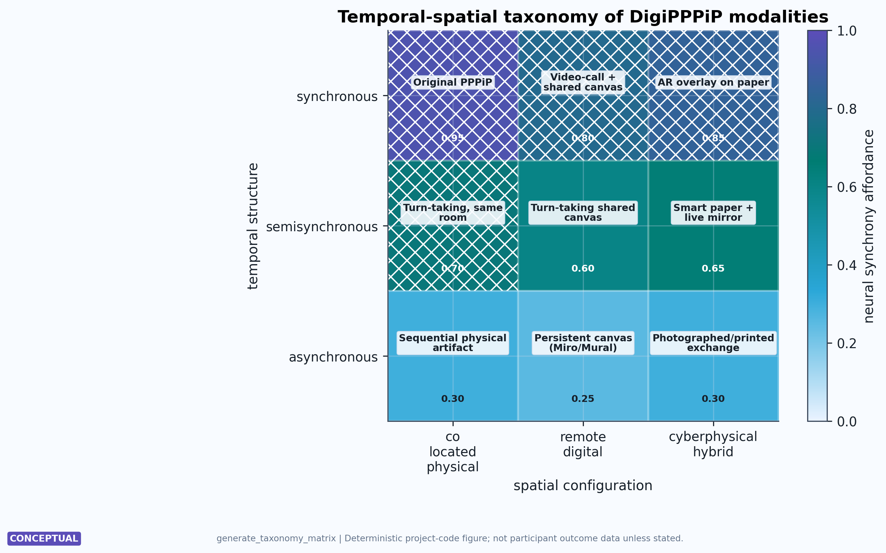

Temporal-Spatial Taxonomy for Study Design
DigiPPPiP is organized by two primary axes: temporal structure and spatial configuration. The configured project has 3 temporal modes, 3 spatial configurations, and 9 total modality cells. [@fig:taxonomy_matrix] is the central map of that design space. The axes intentionally separate relation from infrastructure: two partners can be relationally engaged while co-present, remote, delayed, or hybrid, but each cell changes what can be perceived, logged, repaired, and revisited.

generate_taxonomy_matrix() from
src/taxonomy.py; read rows as temporal structures, columns
as spatial configurations, cell labels as modality names, numeric labels
as conceptual neural-synchrony affordance scores, and hatching as
high-affordance cells. It supports decision-making about study
conditions rather than product ranking. The scores are design variables,
and measured synchrony would require participant physiology and
controls.The taxonomy is not a typology for naming products. It is a decision procedure for matching relational need to temporal-spatial form. A study should first identify the hard constraint: co-presence, distance, disability access, uneven schedules, privacy risk, or place memory. It should then choose the simplest cell that satisfies that constraint while preserving agency and mutual interpretability. This prevents the framework from treating the most instrumented cell as the most advanced one.
| Temporal structure | Co-located physical | Remote digital | Cyberphysical hybrid |
|---|---|---|---|
| Synchronous | Original PPPiP | Video-call plus shared canvas | AR overlay on paper |
| Semisynchronous | Turn-taking in the same room | Turn-taking shared canvas | Smart paper plus live mirror |
| Asynchronous | Sequential physical artifact | Persistent shared canvas | Photographed or printed exchange |
[@tbl:taxonomy_modes] should be read as a decision aid. A couple seeking immediate mutual attunement may choose synchronous co-presence. A long-distance couple with uneven schedules may choose asynchronous remote drawing. A pair interested in place memory may choose a cyberphysical hybrid that links physical marks with a persistent digital archive. The highest conceptual neural-synchrony score in the configured taxonomy is 0.95, but no single cell is universally best. The appropriate cell depends on access needs, privacy constraints, device availability, emotional goals, and the amount of persistence a dyad actually wants.